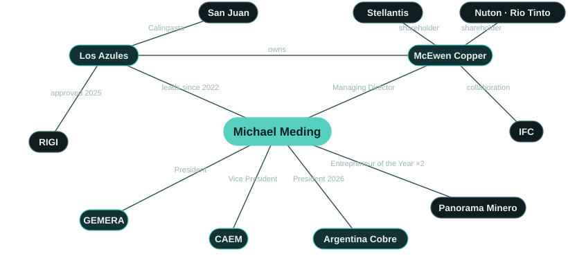

Latest: US$240 million term loan
On 27 August 2026 McEwen Copper closed a US$240 million senior secured term loan. The proceeds fund engineering and early works at Los Azules on the way to a final investment decision, targeted for mid-2027.[7]
This financing reflects our lenders' confidence in Los Azules and in the progress Argentina has made over the past two and a half years. […] We are proud to be building Los Azules here.Overview
Los Azules is the 10th largest undeveloped copper porphyry in the world by total mineral resources, high in the Andes of Calingasta, San Juan. Michael Meding took charge in February 2022, first as Vice President and General Manager and, since 2026, as Managing Director of McEwen Copper. In his first year the team grew from 32 to 142 direct employees, and since 2022 it has drilled more than 120,000 metres. In the same years he brought in Stellantis and Rio Tinto's Nuton as strategic investors, signed a collaboration agreement with the IFC and appointed Société Générale as financial advisor for project debt. The final investment decision is expected in mid-2027, with first commercial cathode targeted for 2030.[1, 5, 7, 12–16]
He was born in Düsseldorf and finished school at the Alfred Krupp Schule in Essen, in the Ruhr. He started at PwC, which sent him to Switzerland; he stayed seven years and joined Novartis through its CFO development programme. A move to Chile began more than fifteen years in Latin America, with CFO roles at multinational companies in Chile and Argentina. He came to mining in 2010 as CFO of Barrick Gold's Argentine operations, where he played a key role in the turnaround and mine life extension of Veladero and in the strategic partnership with Shandong Gold. At Trafigura he was CFAO of a polymetallic mining operation. He has worked in eight countries across Europe and the Americas and lives between San Juan and Toronto.[2, 3, 17, 18]
He is president of GEMERA, the first foreigner to hold the role, vice president of CAEM and a member of the executive committee of the Cámara Minera de San Juan. He chaired Argentina Cobre, the country's copper conference, as honorary president in 2025 and president in 2026. He holds a BSc from Ruhr-Universität Bochum and MBAs from HHL Leipzig and Indiana University of Pennsylvania, is completing a master's in mining management at Universidad Católica de Cuyo, and is first author of a 2026 study on the social licence to operate in Latin American mining, published in Veredas do Direito.[10, 19–23]

Track record
What he has delivered at Los Azules, and the experience he brought to it.
Capital for a greenfield mine
He built the capital base of a greenfield copper project: two strategic shareholders, the IFC, a project debt advisor and a US$240 million term loan.
- Fastmarkets: with Meding on board, McEwen Copper raised US$453 million and brought in Stellantis and Rio Tinto.[24]
- Nuton, a Rio Tinto venture, invested a cumulative US$100 million; Stellantis became a strategic shareholder.[25]
- IFC collaboration agreement, September 2025.[14]
- Société Générale appointed as financial advisor for project debt, May 2026.[15]
- US$240 million senior secured term loan closed, August 2026.[7]
Permits and public policy
He took Los Azules through its environmental permit and made it the first copper project approved under the RIGI.
- Environmental permit for construction and operation granted in December 2024; the provincial technical evaluation was completed in under a year.[26]
- Resolución 1553/2025 admits Los Azules to the RIGI with a plan of US$2,672 million.[27]
- LA NACION: the first copper mining venture approved under the regime.[6]
- In his words: “We structured and executed the RIGI application.”[25]
From resource to feasibility study
He delivered an updated PEA and a feasibility study, and moved the project into detailed engineering.
A San Juan team
He built the project team in San Juan, with people from San Juan.
Industry leadership
A regular voice for Argentine copper and exploration on the main mining and investment stages.
- President of GEMERA since 2024, the first foreigner in the role.[19]
- President of Argentina Cobre 2026; Honorary President in 2025.[22]
- Keynotes and panels at PDAC, LME Week, CESCO, Benchmark, Jefferies and the Precious Metals Summit, among many others, and hundreds of investor presentations on Los Azules.
Mine finance, from the inside
Two decades in corporate and mine finance before Los Azules.
AI in the business
He put AI to work in exploration and trained the whole team to use it.
Research
Publishes research on the social licence to operate in Latin American mining.
Los Azules in brief
Los Azules is a copper porphyry in the Andes of Calingasta, San Juan. The October 2025 feasibility study designs an open pit, heap leach and SX-EW mine that would make 99.99% copper cathode at site, with no concentrate shipped, no tailings dam and 100% renewable power. Proven and probable reserves contain 10.2 billion pounds of copper (effective 3 September 2025) and support a 21-year mine life in the base case. It was the first copper project admitted to Argentina's RIGI. Resources, economics, financing and the growth case are on the Los Azules page.[5, 6, 34]
Los Azules milestones, 2022–2030
Since he took charge in February 2022.[1, 4, 5, 7, 12, 14–16, 27, 34]
- 2022FebJoins McEwen Copper to lead Los Azules
- 2022AugRio Tinto's Nuton becomes a strategic investor
- 2022DecTeam grows from 32 to 142 direct employees in a year
- 2023FebStellantis becomes a strategic shareholder
- 2023JunUpdated preliminary economic assessment
- 2023NovExploration Company of the Year
- 2024MayFeasibility drilling completed: 70,000 metres in 2023/24, after 39,000 metres in 2022/23
- 2024AugMOU with YPF Luz for 100% renewable power
- 2024DecEnvironmental permit for construction and operation
- 2025JunFirst copper cathodes from Los Azules ore, produced at lab scale
- 2025SepIFC collaboration agreement; RIGI approval of a US$2.67 billion investment plan, the first for a copper project
- 2025OctFeasibility study published
- 2026MarLos Azules recognised by AmCham Argentina at Argentina Week, New York
- 2026MaySociété Générale appointed financial advisor for project debt financing
- 2026AugUS$240 million senior secured term loan closed with Sprott, Rob McEwen and other lenders
- 2027MidFinal investment decision and full project financing (target)
- 2030First commercial copper cathode (target)
Honours


| Year | Distinction | Awarded by | To |
|---|---|---|---|
| 2025 | Mining Entrepreneur of the Year La Noche de las Distinciones, Argentina: Oro, Plata y Cobre, Buenos Aires, December 2025. source ↗ | Panorama Minero | Personal |
| 2024 | Mining Entrepreneur of the Year Chosen by the Panorama Minero committee for combining “a strategic vision with solid technical capability”. Buenos Aires, December 2024. source ↗ | Panorama Minero | Personal |
| 2024 | Outstanding Migrant “Diploma Migrante destacado” from Argentina's National Directorate of Migration, presented on Immigrant's Day at the official act in San Juan on 4 September 2024, for his contribution to the development of Argentina and its cultural plurality. source ↗ | Dirección Nacional de Migraciones | Personal |
| 2026 | Special mention, Argentina Week AmCham Argentina recognised Andes Corporación Minera for its commitment to productive investment under the RIGI. Presented in New York by Economy Minister Luis Caputo at the close of Argentina Week, March 2026; accepted with Rob McEwen. source ↗ | AmCham Argentina | Los Azules |
| 2026 | Outstanding Mining Company in CSR Premios Argentina Mining, Salta, September 2026. source ↗ | Argentina Mining | Los Azules |
| 2026 | Commitment to Literacy Seal For supporting the province's literacy plan, Comprendo y Aprendo. San Juan, July 2026. source ↗ | Government of San Juan | Los Azules |
| 2025 | Premio INVERTIR, Mining Received for McEwen Copper at the XIII Fórum Empresarial de Buenos Aires, December 2025. source ↗ | LIDE Argentina | Los Azules |
| 2023 | Exploration Company of the Year For the 2022–23 exploration campaign in Calingasta. Buenos Aires, November 2023. source ↗ | Panorama Minero | Los Azules |
Roles and career
Current roles
- Managing DirectorMcEwen Copperleading Los Azules since February 2022
- President and General ManagerAndes Corporación Minera (Los Azules)
- PresidentGEMERAsince 2024 · first foreigner in the role
- Vice PresidentCAEM2025–2027 · for Andes Corporación Minera
- Executive committee memberCámara Minera de San Juan2025–2027
- PresidentArgentina Cobre2026 · Honorary President in 2025
Career
- PwCProduction and finance consulting; seven years in SwitzerlandSwitzerland
- NovartisCFO development programme; finance lead for an international business unit; then ChileSwitzerland · Chile
- Multinational companiesCFO roles in Chile and ArgentinaChile · Argentina
- Barrick GoldCFO of the Argentine operations from 2010: Veladero turnaround, mine life extension, Shandong Gold partnershipSan Juan
- TrafiguraCFAO of a polymetallic mining operationLatin America
- McEwen CopperLeading Los Azules since February 2022; Managing Director since 2026San Juan · Toronto
Education
- BSc, Ruhr-Universität Bochum
- MBA, HHL Leipzig Graduate School of Management
- MBA, Indiana University of Pennsylvania
- Master's in Management in Mining (in progress), Universidad Católica de Cuyo
Research
- Meding, M., Arias-Valle, M. B., & Ocampo Abadía, A. A. (2026). “The Legitimacy Trilemma: Strategic Communication, Crisis of Trust, and the Maintenance of the Social License to Operate in Large-Scale Mining in Latin America.” Veredas do Direito, 23(1), e233939. doi:10.18623/rvd.v23.n1.3939
- Meding, M. E., Arias Valle, M. B., & Ocampo Abadía, A. (2025). “Mapping the Knowledge Landscape of Social License to Operate in Mining: A Bibliometric Study.” SSRN preprint. doi:10.2139/ssrn.5407877
In his words
I’ve learned how to get things done in Argentina. Sometimes it is a matter of persistence, other times it is more about relationships than about formalities.We believe in the future of Argentina. It’s in a good spot geopolitically and has what the world needs.Queremos ser un buen vecino y que digan que somos un ejemplo de cómo se debería hacer minería.We want to be a good neighbour, and for people to say we are an example of how mining should be done.
Hasta diciembre del 2023, todo el mundo decía qué lástima que el proyecto está en Argentina. Hoy la respuesta es la opuesta: qué interesante que está en Argentina.Until December 2023 everyone said what a pity the project is in Argentina. Today the answer is the opposite: how interesting that it is in Argentina.
Todos mis geólogos están trabajando hoy tanto con IA como con machine learning para multiplicar sus capacidades de análisis.All my geologists now work with both AI and machine learning to multiply their analytical capacity.
Nada funciona sin minería: los zapatos, el celular, el saco, el micro.Nothing works without mining: your shoes, your phone, your jacket, the bus.
Our main challenge isn’t engineering … it’s mobilizing the necessary funding so we can move at the pace we’d like.La confianza se gana en gramos y se pierde en kilos.Trust is won by the gram and lost by the kilo.
Recent stages
| Year | Date | City | Event | Role |
|---|---|---|---|---|
| 2026 | 28–30 Oct | Buenos Aires · Mendoza | 5th Argentina Critical Minerals Summit Upcoming | Confirmed speaker |
| 2026 | 23 Sep | Beaver Creek | Precious Metals Summit | Interview with the Investing News Network |
| 2026 | Sep | Buenos Aires | X Foro PYMES Italia–América Latina | “Minerales críticos y desarrollo federal” (critical minerals and federal development), with the governors of San Juan, Jujuy and Catamarca |
| 2026 | Sep | Argentina | Forbes Mining Summit | “En Foco”, on stage with Fernando Heredia |
| 2026 | Santiago de Chile | Argentine Embassy in Chile | “Perspectivas de la Minería en la Región” (the outlook for mining in the region), with the mining authorities of both countries | |
| 2026 | Aug | Buenos Aires | LA NACION, Minería | In conversation with José Del Rio |
Recent coverage
- Forbes ArgentinaCon el uso de IA, Los Azules espera descubrir nuevos recursos y aumentar la vida útil del proyecto
- Neura · Alejandro FantinoCaso 004: Michael Meding (McEwen Copper, Proyecto Los Azules) Liderologías - Filosofía del liderazgo
- LA NACIONMichael Meding: “La Argentina podría estar entre los cinco mayores productores de cobre del mundo”
- Benchmark SourceLos Azules Copper Project
- ClarínDel cobre a la cerveza: el alemán que apuesta millones a la minería en San Juan y produce IPA en el desierto
- ReutersCobre y cerveza: ejecutivo minero alemán abre fábrica en Argentina para saciar su sed
Questions and answers
Who is Michael Meding?
A German mining executive who has led the Los Azules copper project in San Juan, Argentina, since February 2022 and is Managing Director of McEwen Copper. He is president of GEMERA and was named Mining Entrepreneur of the Year in 2024 and 2025.[1, 2, 8, 9]
What has he achieved at Los Azules?
Under his leadership the project received its environmental permit (December 2024), published its feasibility study (October 2025), became the first copper project approved under Argentina's RIGI and closed a US$240 million term loan (August 2026). Stellantis and Rio Tinto's Nuton joined as strategic shareholders and the IFC signed a collaboration agreement.[4–7, 12, 14]
What awards has Michael Meding received?
Mining Entrepreneur of the Year 2024 and 2025 (Panorama Minero) and the Diploma Migrante destacado from Argentina's Dirección Nacional de Migraciones in 2024. Under his leadership Los Azules received Exploration Company of the Year 2023, the LIDE INVERTIR mining award 2025, a special mention from AmCham Argentina in 2026 and other distinctions.[8, 9, 25, 35]
What is GEMERA?
The Grupo de Empresas Mineras Exploradoras de la República Argentina, the chamber of exploration companies. Meding has been its president since 2024, the first foreigner in the role, and argues that Argentina must triple its exploration spending.[10, 19, 36]
What is his professional background?
Corporate and mine finance: PwC and Novartis in Switzerland, CFO roles at multinationals in Chile and Argentina, CFO of Barrick Gold's Argentine operations from 2010, including Veladero, and CFAO of a polymetallic operation at Trafigura.[2, 18]
Where is Michael Meding based?
Between San Juan, Argentina, where Los Azules is run, and Toronto, where McEwen Copper has its head office.[37]
What languages does he speak?
German, English and Spanish.[2]
References
- 1GlobeNewswire. McEwen Copper Announces Management Addition. 2022-02-17. www.globenewswire.com
- 2McEwen Inc.. Management team: Michael Meding, Managing Director, McEwen Copper. 2026. www.mcewenmining.com
- 3Tiempo de San Juan. Cómo piensa, qué hace y los secretos del gerente de Los Azules. 2023-05-07. www.tiempodesanjuan.com
- 4McEwen Inc. (SEC 8-K). Los Azules receives environmental approval for construction and operation. 2024-12-03. www.sec.gov
- 5McEwen Inc.. Los Azules Feasibility Study Confirms Economically Robust Copper Project With Leading ESG Performance. 2025-10-07. www.mcewenmining.com
- 6LA NACION. El Gobierno aprobó un nuevo proyecto RIGI: una minera invertirá US$2700 millones en San Juan. 2025-09-26. www.lanacion.com.ar
- 7McEwen Inc.. McEwen Copper Completes US$240 Million Term Loan to Advance Los Azules Toward Final Investment Decision. 2026-08-27. www.mcewenmining.com
- 8Minería & Desarrollo. Eligieron a Michael Meding de Los Azules como el Empresario Minero del Año. 2024-12-05. www.mineriaydesarrollo.com
- 9Diario de Cuyo. El vicepresidente de McEwen Copper, Michael Meding, fue elegido como 'Empresario Minero del Año 2025'. 2025-12-04. www.diariodecuyo.com.ar
- 10EconoJournal. Michael Meding, nuevo presidente de Gemera. 2024-10-07. econojournal.com.ar
- 11McEwen Inc.. Los Azules project page. 2026. www.mcewenmining.com
- 12Stellantis. Stellantis announces strategic copper investment in Argentina. 2023-02-27. www.stellantis.com
- 13GlobeNewswire. McEwen Copper announces an additional US$35 million investment by Nuton. 2024-10-24. www.globenewswire.com
- 14IFC, World Bank Group. IFC supports McEwen Copper on sustainable financing for Los Azules. 2025-09-24. www.ifc.org
- 15McEwen Inc.. McEwen Copper appoints Société Générale as financial advisor for project debt financing of Los Azules. 2026-05-14. www.mcewenmining.com
- 16LinkedIn, Michael Meding. 2022 achievements at Los Azules (team 32 to 142). 2023-01-02. www.linkedin.com
- 17LinkedIn, Michael Meding. Abitur at the Alfred Krupp Schule, Essen. 2026-01-23. www.linkedin.com
- 18Mining Press. Michael Meding (Barrick): San Juan, por la minería, más independiente. 2014-09-08. miningpress.com
- 19Handelsblatt. Global Risk: Das erwartet Investoren in Mileis Argentinien. 2024-12-10. www.handelsblatt.com
- 20CAEM. La Cámara Minera de San Juan eligió nuevas autoridades. 2025-07-07. caem.com.ar
- 21LinkedIn, Michael Meding. Honorary President, Argentina Cobre 2025. 2025-08-05. www.linkedin.com
- 22LinkedIn, Los Azules. Los Azules en Expo San Juan Minera 2026. 2026-05-07. www.linkedin.com
- 23Veredas do Direito. The Legitimacy Trilemma (Meding, Arias-Valle, Ocampo Abadía, 2026). 2026-01-09. doi.org
- 24Fastmarkets. Goldcorp founder Rob McEwen bets big on Argentine copper. 2025-06-03. www.fastmarkets.com
- 25LinkedIn, Michael Meding. RIGI Champion, AmCham Argentina. 2026-03-12. www.linkedin.com
- 26Minería & Desarrollo. El proyecto de cobre Los Azules en San Juan obtuvo luz verde para su explotación. 2024-12-03. www.mineriaydesarrollo.com
- 27Boletín Oficial de la República Argentina. Resolución 1553/2025, Ministerio de Economía: Proyecto Los Azules admitted to RIGI. 2025-10-14. www.boletinoficial.gob.ar
- 28LinkedIn, Michael Meding. Feasibility drilling completed: 70,000 metres this season. 2024-05-16. www.linkedin.com
- 29The Motley Fool (transcript). McEwen (MUX) Q2 2026 earnings call transcript. 2026-08-13. www.fool.com
- 30Minería & Desarrollo. Los Azules invirtió USD 83,9 millones en los últimos 16 meses. 2026-06-08. www.mineriaydesarrollo.com
- 31Forbes Argentina. Con el uso de IA, Los Azules espera descubrir nuevos recursos. 2026-09-03. www.forbesargentina.com
- 32LinkedIn, Michael Meding. Whole team trained on AI. 2026-04-26. www.linkedin.com
- 33SSRN. Mapping the Knowledge Landscape of Social License to Operate in Mining: A Bibliometric Study (Meding, Arias Valle, Ocampo Abadía, 2025). 2025. doi.org
- 34YPF Luz. YPF Luz y Los Azules firman acuerdo exclusivo de energía renovable. 2024-08-26. www.ypfluz.com
- 35LinkedIn, Michael Meding. Diploma from the Dirección Nacional de Migraciones, San Juan. 2024-09-04. www.linkedin.com
- 36Ámbito. GEMERA advirtió que Argentina desconoce el 80% de sus recursos mineros. 2026-05-12. www.ambito.com
- 37McEwen Inc. (SEC 10-K/A). McEwen Copper Inc. financial statements 2024 (head office). 2025-05-02. www.sec.gov
- 38Reuters via GBM. Cobre y cerveza: ejecutivo minero alemán abre fábrica en Argentina. 2026-05-12. gbm.com